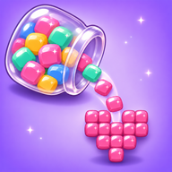
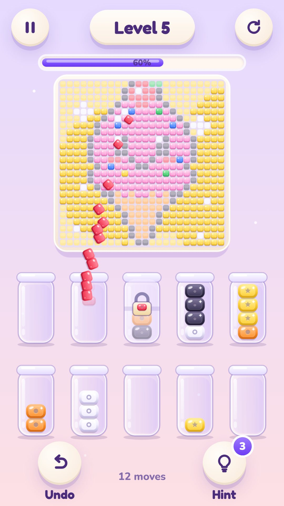
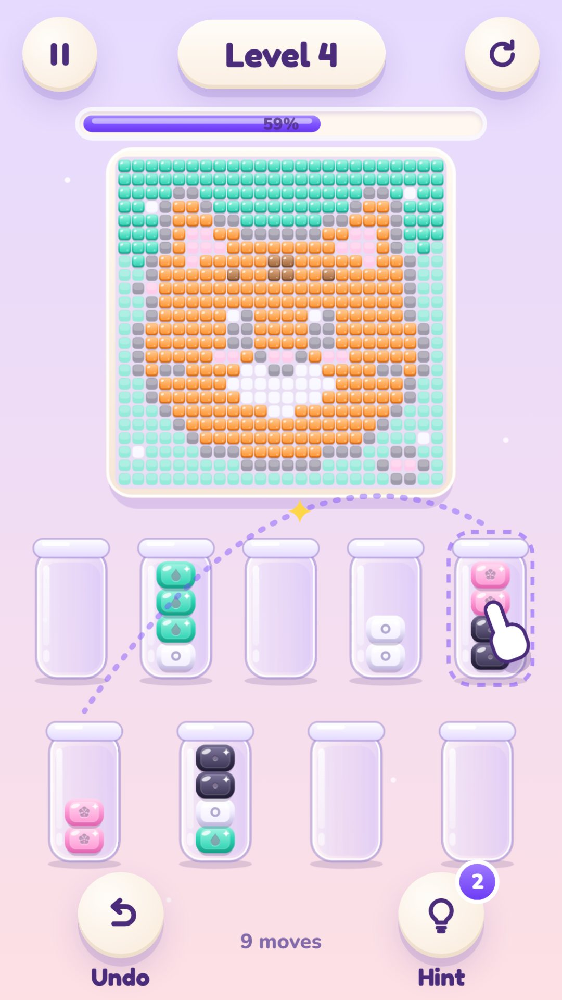
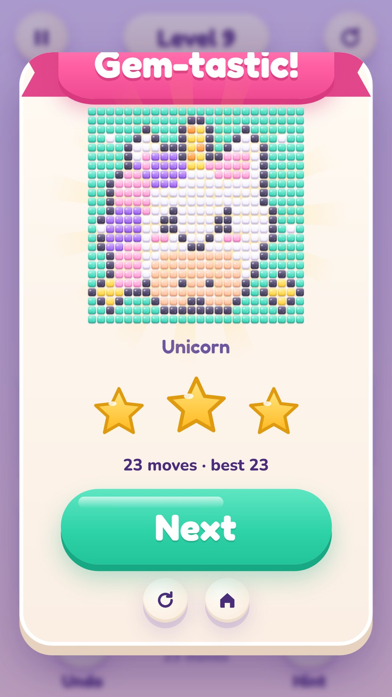
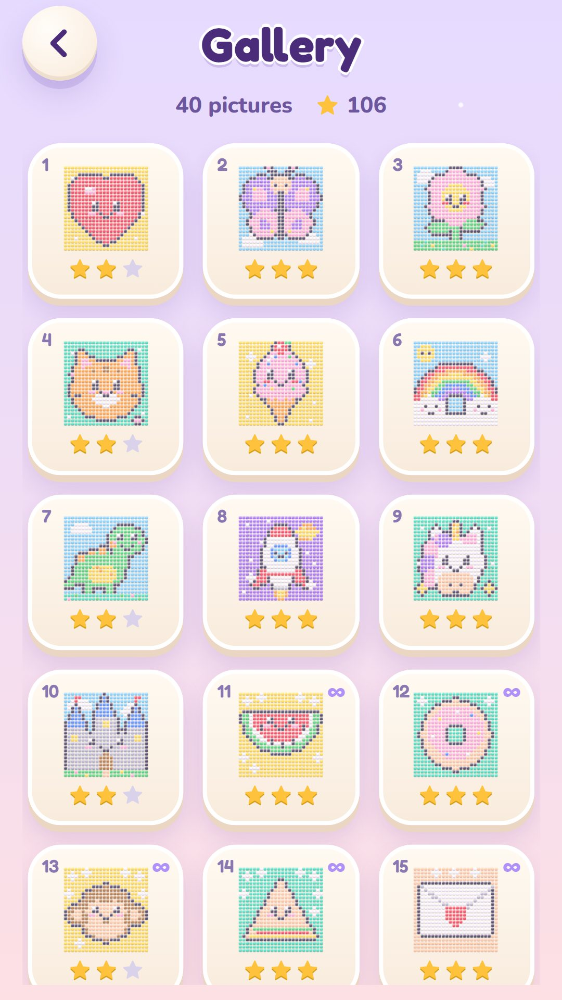
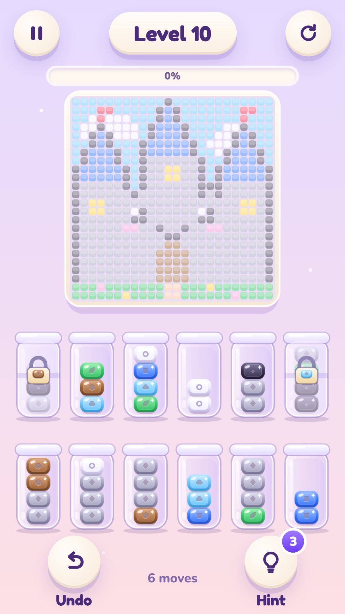
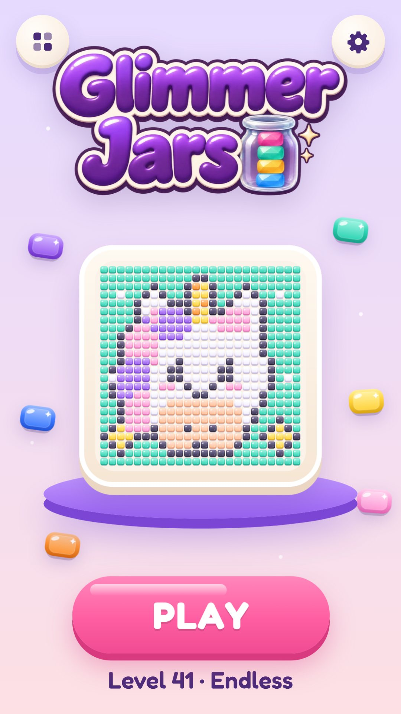

Sort the jars
Tap a jar, then another, to pour the top gems across. Each jar holds 4 gems, and gems only stack on the same colour.
Pour sparkling gems between glass jars until every jar holds one colour. A full jar closes with a sparkle, then you tap that colour on the picture and watch the gems fly out and fill it in a shimmering wave.

Glimmer Jars is brand new and waiting for Google Play review. The links work once the test release is approved and your Google account is on the tester list.
Tap a jar, then another, to pour the top gems across. Each jar holds 4 gems, and gems only stack on the same colour.
When a jar is full of one colour it is ready. Tap that colour on the picture and the gems pour out, filling it in a glossy wave.
Some jars are locked. Place the matching colour on the picture to open them, and plan your pours around them.
Actual screenshots from Glimmer Jars 1.0. Tap an image to view it larger.






300 hand-drawn kawaii pictures, from kittens and ice cream to unicorns and little houses, then endless new puzzles. Undo, restart and hints are always there, gems can show shape marks for colour-blind play, and there are no timers.
Free with ads on Android (remove them anytime with a one-time purchase). No account needed: your progress stays on your device. See the privacy policy and terms of service.
Tell us what you think with Settings → Send feedback in the game, or at mzagames@proton.me. Please avoid adding unnecessary personal information.